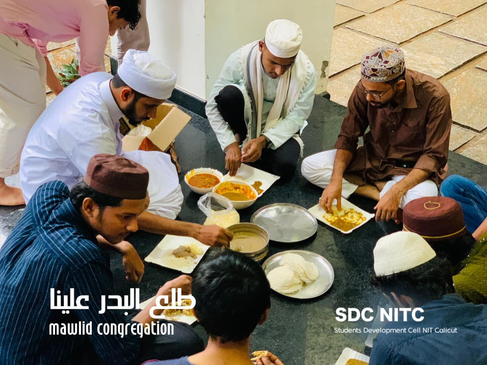
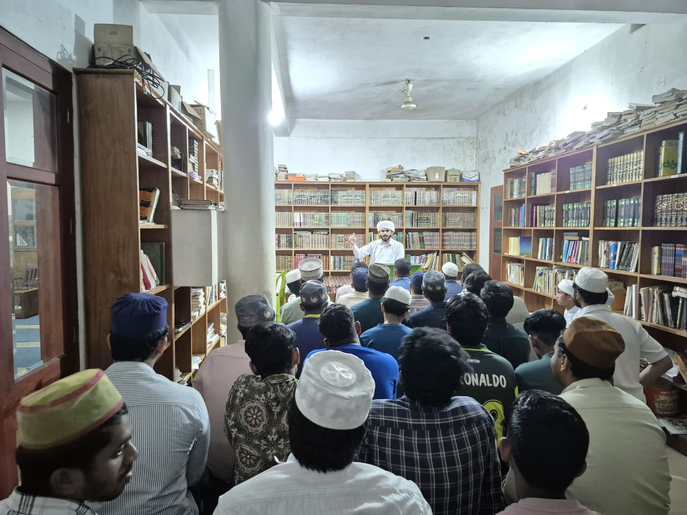
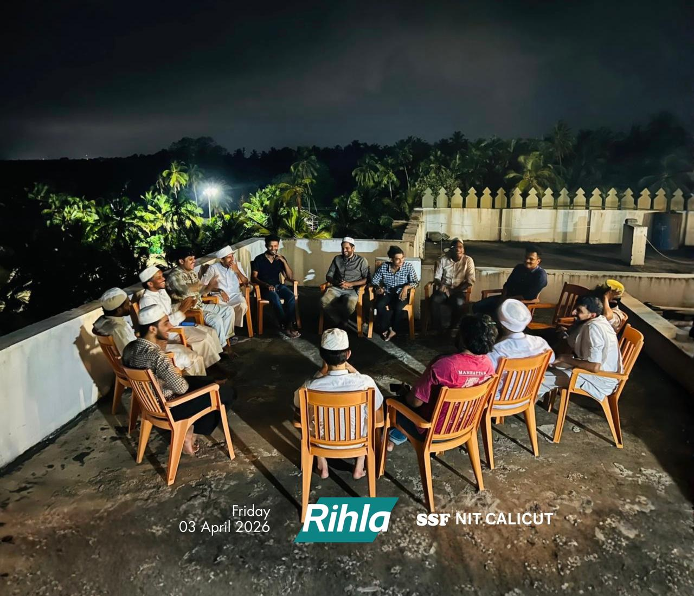
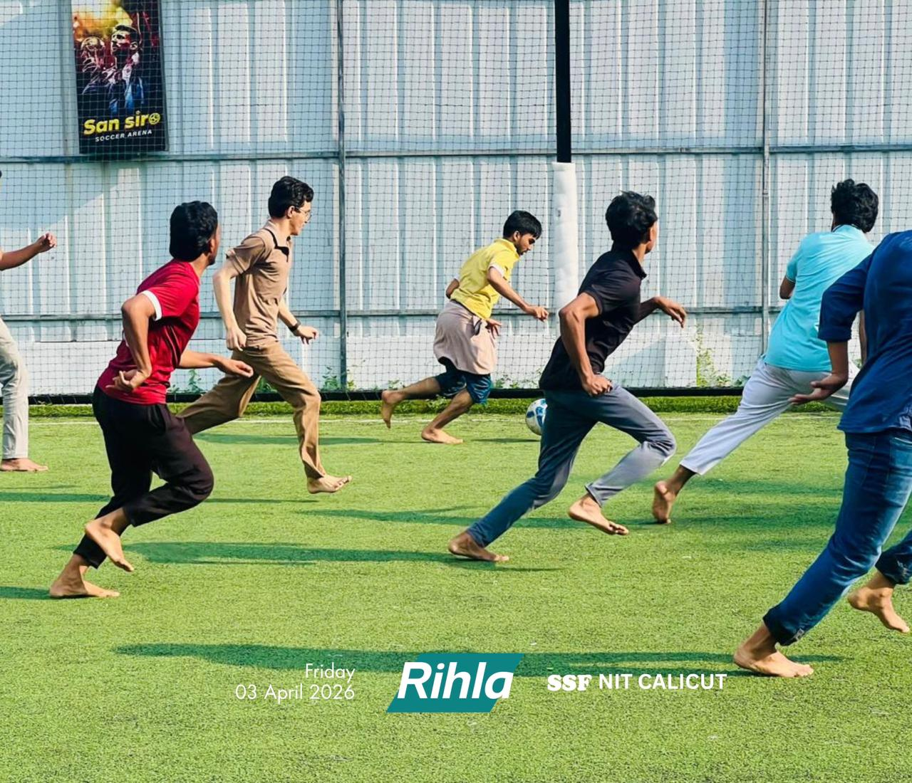

Nurturing Moral Character, Academic Mastery & Future Leaders.
Working as a community outside NIT Calicut for better advancements in career, network and have great oppurtunities to leverage your intellectual level. Weekly moral mindful sessions namely "Essence of Mahabba". Regular gatherings to share the weights and be free. Supported by alumnus.
Years Campus Legacy
Continuous Mentorship
Scholars Guided
B.Tech, M.Tech & Ph.D
Alumni in Various Industries & Government Sectors
Meesho, BPCL, ISRO
Moral Circles Held
Weekly Classes
15+ Years of Dedicated Guidance at National Institute of Technology Calicut
The Students' Development Cell (SDC) functions proactively under the Sunni Students' Federation (SSF) at NIT Calicut. Founded by visionary campus technocrats, SDC bridges ethical self-realization with uncompromising technical excellence.
Engineering education demands rigorous problem solving, yet genuine fulfillment requires inner peace, empathetic social conscience, and clear moral grounding. SDC provides an enduring brotherhood where scholars find support across academic hurdles, career choices, and spiritual inquiries.
Ikhlas & Integrity
Pure sincerity in student service, maintaining ethical purity in professional engineering conduct.
Academic Rigor
Top-tier peer tutoring, solved question banks, and scholarly research mentoring.
Brotherhood & Khidmah
Unconditional senior support, mutual-aid funding, and hostel life handholding.
Leadership & Impact
Equipping engineers to lead top multinational labs and public sector institutions.
Our Recent Major Events
Events that gave pace to fulfill academic and professional integrity also that provided pleasured nights
Pillars of Holistic Student Development
Operating under Campus Syndicate of Sunni Students' Federation at NIT Calicut, SDC bridges ethical self-realization with technical supremacy.
Weekly Moral Classes & Values Education
Held every Wednesday 6.30 PM at Alqamar, Companymukk. Cultivating inner balance, ethical conviction, and spiritual mindfulness amid demanding engineering coursework.
Academic Support & Question Bank
Comprehensive coverage across 12 NITC Departments. Curated previous year question papers (PYQs), topper handwritten notes, and peer-to-peer crash workshops ahead of Mid & End-Semesters.
Career Guidance, Placements & GATE/CAT
Sessions on Placement related and create supportive environment for cracking competitive exams like GATE/CAT. Oppurtunites for emerging startup ventures.
Mental Health & Campus Well-being
Safe, judgment-free spaces with senior student mentors to talk through exam stress, hostel adaptation, personal grief, and relational pressures with total discretion and empathy.
Campus Memories & Iftar Gatherings
Browse photo documentation of various programs including Daily Ifthar Meet.
Student Relief & Emergency Fund
SDC maintains an anonymous mutual-aid fund supporting scholars facing sudden medical contingencies, semester fee distress, or hostel mess arrears.
Join the SDC
Need a mindful session ? Or are you feeling loneliness. Join our team.
Campus Gatherings, events & Grand Ifthar
Glimpses of community living, annual Ramadan banquets, fresher welcomes, and scholarly halaqas at NITC.



